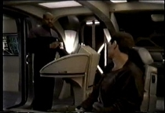
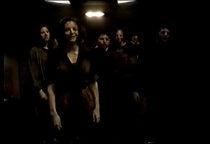

|

Publicado
originalmente
em 2 de maio de 2005

Paraíso questionável
Uma
visão pessoal do arco Maqui, na qual o autor faz uma análise dos elementos presentes
nos episódios da série
|

|
- Eles morreram porque você encheu a cabeça deles com falsas esperanças. Você vendeu a eles sonhos de uma vitória militar quando o que eles realmente precisavam era uma paz negociada. -- Sisko para Eddington, Blaze of Glory. Para
especularmos a respeito do que seria a resposta a esta questão, primeiro precisamos
avaliar os elementos existentes no cânone e cronologia da franquia de Jornada
nas Estrelas que diz respeito a guerra entre a Federação e Cardássia, a qual
teria sido o estopim original daquilo que viria a ser a crise maqui. Como
diversos elementos isolados ao longo de diversos episódios de A Nova Geração,
Deep Space Nine e Voyager já deixaram claro, houve um conflito militar
entre a Federação e Cardássia em algum momento entre as décadas de 2350 e 2360.
O Chefe Miles O'Brien, por exemplo, já teve inúmeros elementos de sua carreira
estabelecidos que ele teria servido durante esta guerra, além de diversos outros
elementos cânones e cronológicos que fazem menção a este conflito. Desta forma,
é largamente inquestionável que tal guerra ocorreu. Mas
qual teria sido as razões desta guerra, e suas conseqüências? Os assentamentos
coloniais federados nos setores em disputa parecem estar bem no meio da questão.
Assim, devemos considerar que estes assentamentos federados são ou a razão desta
guerra, ou sua conseqüência. Em qualquer caso, a situação que temos é: Cardássia
afirma que aquela região pertence a ela. Para isto ser verdade, ou a Federação
anexou lenta e gradativamente aquela região ao longo de décadas, dai a possibilidade
de ser a razão, ou anexou de uma só vez, daí a possibilidade de ser o resultado.
Em qualquer destes cenários, a Federação está de posse de território cuja soberania
está sendo contestada. No meu entender, a possibilidade de os cardassianos terem
completa razão em pedirem os territórios de volta é alta, e eles podem estar dentro
do seu total direito de reclamarem para si os setores os quais teriam sido seus.
Vamos avaliar como isto seria possível. Uma
das características que se alega que a Federação tem é a de que, frente a uma
situação injusta, a Federação seria do tipo de sociedade que pisaria firme para
defender seus ideais, e defender aquilo que acredita que é o correto. Mas da mesma
forma, ela seria do tipo de sociedade que, frente a se demonstrar que aquilo que
ela está fazendo é errado, ela tem a grandeza de admitir que o outro lado está
com a razão e então recua, em nome de garantir que as soluções mais corretas e
mais justas sejam aquelas garantidas. Vamos
levantar as possibilidades de desfechos sobre as demandas cardassianas por ter
aqueles territórios: 1.
A Federação ter direito aos territórios e não os devolver: este seria o
posicionamento mais digno e justo de a Federação ter, ou seja, ela saberia que
está com a razão e ela pisaria firme pelo direito de proteger a legalidade de
sua situação. 2.
A Federação ter direito aos territórios e mesmo assim os devolver: este
posicionamento demonstraria que a Federação seria uma completa e total inepta,
uma nação de entreguistas controlada por políticos sem-espinha e defendida por
bananas incapazes, os quais não teriam peito de pisarem firme por seus ideais. 3.
A Federação não ter direito aos territórios e negar a devolução: embora
nesta possibilidade a Federação pelo menos pisa firme por aquilo que ela acredita,
ela estaria agindo de maneira abertamente arrogante, desonesta e imperialista,
ao se recusar devolver para terceiros o território que claramente não lhe pertence. 4.
A Federação não ter direito aos territórios e os devolver: nesta possibilidade,
a Federação admite que errou em primeiro lugar ao ocupar território que não lhe
pertencia, e aceita devolver este território a seus legítimos donos. É
de se notar que destes quatro cenários, o único no qual a Federação sairia sem
nada contra si teria sido o primeiro deles, onde ela tem direito aos sistemas,
e pisaria firme para garantir seus ideais e garantir uma situação justa. Contudo,
como é cânone que dados territórios foram de fato devolvidos aos cardassianos,
ou pelo menos trocados por outros, tanto este primeiro cenário como o terceiro
estão fora de cogitação em ter sido aquilo que ocorreu. Restam o segundo e o quarto. O
segundo cenário, se foi aquilo que de fato ocorreu, mostraria de uma maneira clara
e definitiva que a Federação realmente seria governada por um bando de Clones
do Nerville Chamberlein, e o Almirantado da Frota Estelar seriam realmente os
Keystone Kops. Sem meias palavras, este cenário é simplesmente imbecil demais,
mesmo para os padrões federados, de ser realmente aquele que corresponderia a
realidade dentro do contexto onde o universo de Jornada ocorre. Resta,
assim, o quarto cenário, aquele o qual eu considero pessoalmente o mais provável
que tenha ocorrido: ou seja, a Federação admitir que tudo bem, errou ao ocupar
indevidamente aqueles setores anos antes, e errou ao criar colônias neles; desta
forma, a troca de setores na criada Zona Desmilitarizada entre Cardássia e a Federação
seria a tentativa federada de corrigir tais erros, e devolver determinados sistemas
aos seus legítimos donos. De todos os cenários, parece ser aquele que mais condiz
com aquilo que se conhece sobre a Federação de Planetas Unidos. Ela poderia ter
agido de maneira diferente e se recusar a devolver os territórios? Poderia, mas
isto poderia ser bem mais incoerente com os valores federados – mas iremos falar
mais sobre esta possibilidade ainda. Portanto, são por estas razões e por esta avaliação e análise dos elementos cânones do arco Maqui que eu considero para o presente artigo o cenário em que a Federação não tinha direito sobre determinados territórios que ocupou na Guerra da década de 2350, e teve que concordar em sua devolução para os Cardassianos, por ser o cenário que eu acredito represente melhor a situação política que levou aos acordos que criaram a Zona Desmilitarizada e a gênesis da crise Maqui. Aspectos da crise em contraste com elementos históricos reais - Eu conclamo todos os oficiais e soldados franceses que estão na Grã-Bretanha ou eventualmente se encontrarem nela, com ou sem suas armas, para se juntarem a mim. Aconteça o que acontecer, a chama da resistência francesa não pode e não irá morrer. -- General Charles De Gaulle, em discurso na BBC em 18 de junho de 1940, que ajudou a originar os grupos da Resistência Francesa que viriam a ser conhecidos como os Maquis. Embora
eu não seja realmente grande fã de analogias como base de argumentação, há momentos
em que elas servem bem para pelo menos ilustrarem um ponto, e existem duas em
questão que se encaixam bem na atual análise da questão Maqui. Vamos a primeira
delas, que se trata de uma comparação entre como poderia ter sido a Guerra Cardassiana/Federada
da década de 2350, com a crise e guerra das Ilhas Malvinas, entre a Grã-Bretanha
e a Argentina, no início da década de 80. Inicialmente,
vamos traçar alguns paralelos e equivalências: Grã-Bretanha
- Democracia parlamentar; Federação
- Democracia parlamentar. Malvinas
- Território em litígio controlado pela democracia parlamentar; Colônias
na ZDM - Território em litígio controlado pela democracia parlamentar. Iremos
considerar ambas como "TERRITÓRIO". Argentina
- Ditadura (em 1982), clama para si o controle do território próximo as suas fronteiras; Cardássia
- Ditadura, (em 2350s) clama para si o controle do território próximo as suas
fronteiras. Iremos
considerar ambas como ambas como "DITADURA". Em
dado momento (meados do séc 19 para um, meados do século 24 para outra), DEMOCRACIA,
por já ter feito algumas incursões naquela área, e vendo que o TERRITÓRIO, embora
clamado pela DITADURA e dentro de sua esfera de influência, não era muito usado
pela DITADURA, se apoderou indevidamente do TERRITORIO por razões particulares
a si, e posteriormente instalou colonos lá, que desde então se consideram plenos
cidadãos de DEMOCRACIA. Então,
em outro dado momento (1982 e 2350’s), DITADURA invade a força o TERRITÓRIO; DEMOCRACIA
repele o invasor, e mantém os seus colonos no TERRITÓRIO. Mas DITADURA justifica
a invasão alegando que aquele território sempre foi por direito seu, mesmo que
não o utilizasse em larga escala por algum período de tempo. Até
aqui, esta primeira analogia serve bem para ilustrar que se observando a questão
por diferentes ângulos, tanto Cardássia quanto a Federação tem alegações válidas
para desejarem manter seu território, bem como a Argentina e a GB. Tanto Cardássia
quanto a Argentina alegam que aquele território sempre foi por direito seu, e
fora tomado indevidamente –- uma alegação justificável e compreensível. Por outro
lado, tanto a Federação quanto a GB alegam que possuem colonos assentados neste
território aos quais seria injusto pedir que se retirassem de seus lares -- também
alegações justificáveis e compreensíveis.  POTÊNCIA
COLONIAL está controlando o TERRITÓRIO depois de ter tomado seu controle em guerras
anteriores, inclusive algumas em defesa própria contra agressões iniciais. Neste
TERRITÓRIO, a POTÊNCIA COLONIAL incentivou pessoas a irem criar colônias. Então
estes COLONOS, incentivados pela própria POTÊNCIA COLONIAL, ocuparam o TERRITÒRIO
e nele construíram seus lares e criaram prósperas comunidades baseadas nos valores
da POTÊNCIA COLONIAL. Porém,
um certo dia, a POTÊNCIA COLONIAL, para cumprir eventuais acordos de paz com os
povos e nações que anteriormente controlavam o local, terá que retornar tais territórios
para estes povos, e assim sendo, retirar os COLONOS que incentivou a irem para
lá. Contudo, os COLONOS já deixaram claro que não desejam sair, embora isto seja
necessário para a política externa da POTÊNCIA COLONIAL. Neste
ponto de ambas as analogias, chegamos no ponto em que as eventuais escolhas dos
colonos britânicos nas Malvinas e dos colonos judeus na Cisjordânia poderiam vir
a ser exatamente as mesmas as quais os Maquis tiveram que enfrentar. Particularmente
para os judeus na Cisjordânia, uma vez que a retirada de Israel dos territórios
palestinos ocupados é algo muito mais crítico para a geopolítica atual do que
uma eventual retirada britânica das Malvinas. Assim,
os colonos judeus na Cisjordânia, como os colonos federados na ZDM Cardassiana,
podem ter duas opções: ou eles se retiram com a sua POTÊNCIA COLONIAL, ou eles
então aceitam ficar no local, mas não mais como cidadãos da POTÊNCIA COLONIAL,
mas sim como cidadãos de um estado beliscoso a esta sua antiga POTÊNCIA COLONIAL. No
caso federado, eles não aceitaram nenhuma destas duas opções, e providenciaram
uma espécie de terceira via: pegaram em armas, e passaram a agredir o estado beliscoso
em questão, no caso, os Cardassianos, e após a intervenção da POTÊNCIA COLONIAL
na questão, no caso a Federação, passaram a também agredir militarmente esta última,
sua antiga nação. Agora,
no caso israelense, será que seria viável ou justificável, do nosso ponto de vista
fora do universo de Jornada, acreditarmos que aquilo que seria o mais correto
aos colonos judeus fazerem seria o mesmo que aqueles colonos federados que se
tornaram maquis fizeram? Será que seria viável ou justificável esperar o mesmo
dos britânicos nas Malvinas, na improvável hipótese de que eles se vissem na mesma
situação? Ou seja, além de passarem a atacar argentinos, seus navios e sua presença
nas ilhas, passassem a atacar também britânicos que viessem interceder na onda
de violência que se instalasse na região? Haver
a possibilidade de fazermos estes paralelos da crise Maqui com estas duas questões
geopolíticas de nosso próprio universo demonstra bem como o arco Maqui provou
ter um enorme potencial para estabelecer que todos os seus participantes, todos
os lados envolvidos, maquis, federados e cardassianos, todos estes podem ter bons
pontos a defender, e podem ter pontos nos quais estão errados e tem que cederem
alguma coisa. Mas ainda retornaremos isto do potencial. A
Terra é um conhecido paraíso. E quanto as colônias federadas? -
Na Terra não existe pobreza, crime ou guerra - você olha para fora do QG da Frota
Estelar e você vê um paraíso. Bem, é fácil ser santo no paraíso. Mas os Maquis
não vivem no paraíso. Aqui, na ZDM, estes problemas ainda não foram resolvidos.
Aqui não existem santos, apenas pessoas. Famintas, assustadas e determinadas a
fazer o que for necessário para sobreviver, quer isto receba a aprovação da Federação
ou não. --
Sisko, "The Maquis", Parte 2. Uma
idéia muito difundida no fandom, que conta inclusive com o apoio de personagens
dentro do próprio contexto do universo onde se passa a franquia, é que os políticos
federados na Terra teriam dificuldades de solidarizarem com os colonos os quais
estão prejudicando com suas decisões. Contudo,
eu nunca aceitei – e jamais aceitarei – este posicionamento de Sisko pelo valor
da face. Antes de qualquer coisa, precisamos nos lembrar de que estamos falando
da Federação, aqui. A mesma Federação que nos é vendida como sendo o ápice da
conscientização social humana, a sociedade construída em cima dos melhores valores
sociais que se pode imaginar aos quais um dia iremos evoluir, a sociedade a qual
os aliens sempre parecem estar dispostos a ingressarem, tal qual um endosso desta
superioridade social federada.  A
vida colonial é dura, exige muito trabalho e suor? Tudo bem, isto ela pode ser.
Exige sacrifícios e exige disposição? Também muito bem. Há problemas a serem endereçados?
Também plenamente plausível. Mas sendo sociedades montadas nos valores sociais
federados, e construídas com recursos federados, e sendo resultado de duro trabalho
honesto, é de se imaginar que a vida nelas esteja longe de ser um antro subdesenvolvido,
onde impera a violência, o desgoverno, a miséria e outras chagas sociais as quais
dizem para nós que a Federação já se livrou. Tais colônias certamente dispõem
de todos os recursos tecnológicos a disposição da Federação, já que são colônias
federadas. Tais colônias certamente são gerenciadas com o manto da justiça federada,
com a segurança de não haver crimes e existem com os indicadores sociais federados,
os quais devem indicar um padrão de vida digno. Assim, se a vida nas colônias
não é nenhum paraíso, onde se precisa trabalhar duro, pelo menos possuem um modo
de vida digno, justo e condizente com o que se espera de uma sociedade desenvolvida. Portanto, o velho discurso "É fácil ser santo no paraíso" não serve de maneira alguma como argumentação para defender posições de "Ah, vocês não nos entendem" da parte dos colonos maquis para os políticos e militares na Terra. Se a Terra é um paraíso, as colônias que este paraíso espalha por ai também não devem ser nenhum buraco lamacento e sem-lei. Quantas pessoas hoje em dia, em nosso universo aqui, não considerariam a vida nas colônias federadas como um verdadeiro paraíso. Desta forma, a fala de Sisko, ainda que soe linda e inspiradora, também não se sustenta por muito tempo frente a uma análise mais racional levando em conta a sociedade sobre a qual comenta. A Federação não pode ser perfeita, sem dúvida que não é, mas da mesma forma os elementos até hoje nos apresentados sobre a Federação não combinam em nada com uma sociedade que permitiria que suas próprias colônias fossem tão ruins como Sisko parece assumir que seriam. Defeitos no ideal federado e no seu "Way of Life" podem ser encontrados de maneira muito mais eficiente e abundante em outros aspectos, mas certamente não muitos iriam estar na maneira pela qual as colônias existem. Continue lendo: Fundamentos ideológicos |